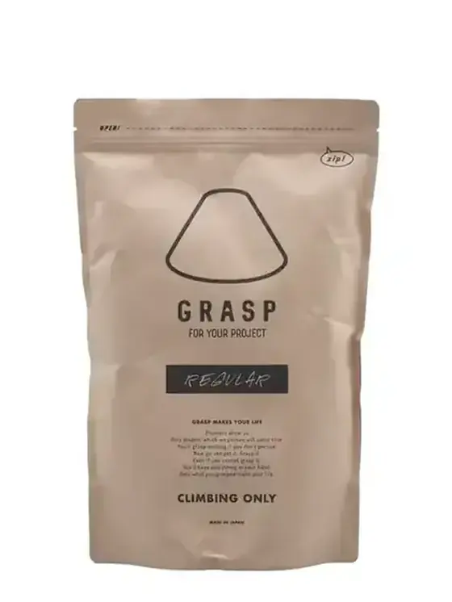
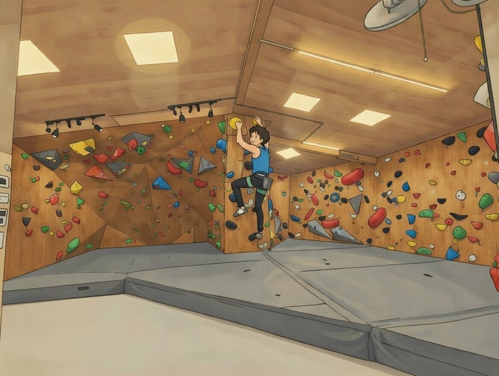
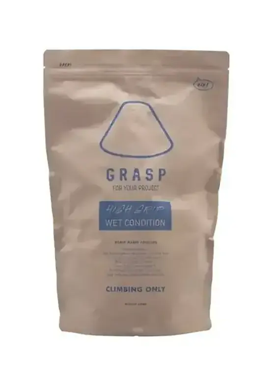
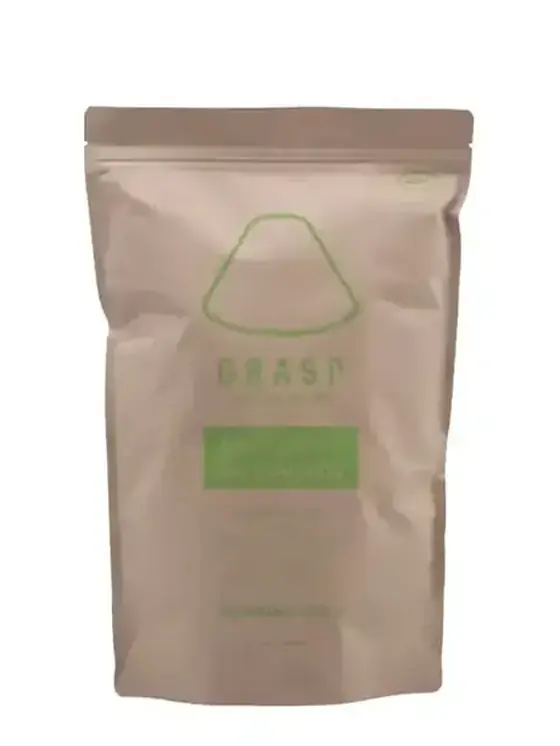
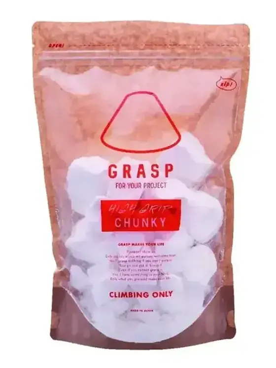
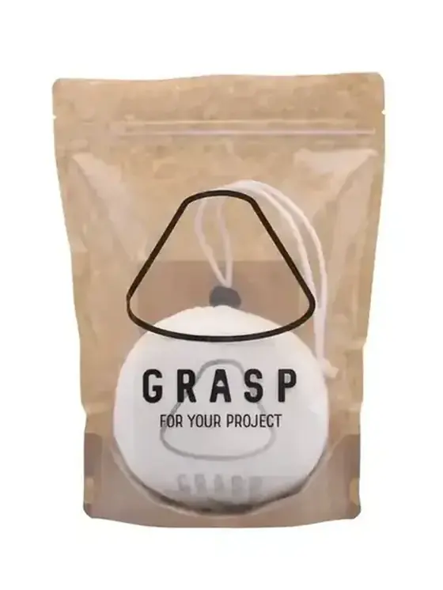
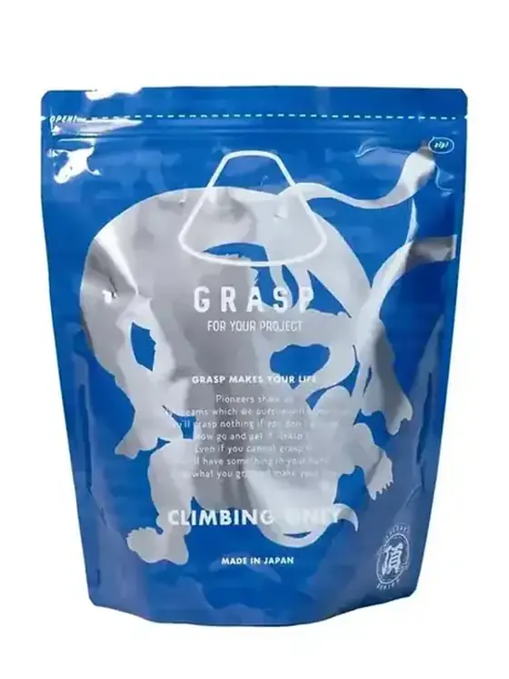
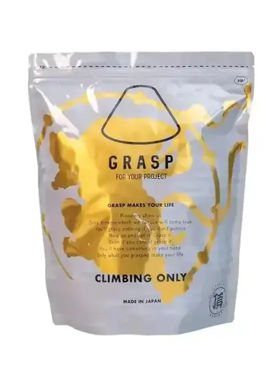
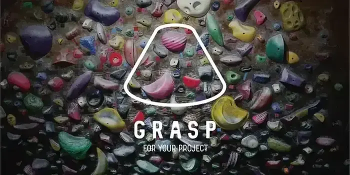

Regular Type
泛用標準款
任何條件下都想維持穩定手感，或想自己調配專屬配方的人。
- 成分：碳酸鎂
- 400 g 大包裝
- 官方定位為「各種條件下表現平坦」
- 可作為混粉基底，依喜好加入其他配方
- 第一次接觸 GRASP，通常從這款開始

來自日本佐賀，與世界級攀岩者小山田大共同開發。不是一罐打天下 —— 而是依手汗量與氣候選配方，必要時自己混粉。歡迎洽詢久淘攀岩抱石館。
About GRASP
「做出攀岩者最信賴的止滑粉」是 GRASP 寫在官網上的那句話。它來自日本，由原本做運動止滑材料的公司，結合攀岩者的實際經驗反覆調整配方。核心邏輯很簡單：同一種粉，不可能同時適合每一雙手、每一種天氣。
GRASP 是日本 株式会社グリーンテクノ21（Green Techno 21）旗下的攀岩用品品牌。這家公司原本就從事運動用止滑劑與球場白線材料，對「摩擦」這件事並不陌生 —— 他們把本業累積的配方經驗，搬到了攀岩粉上。
資料來源：GRASP 官方網站「Call for Overseas Distributors」頁面與商品說明。
手汗多的人和手很乾的人，需要的吸濕量不同；台灣的夏天和日本的冬天，粉停留在皮膚上的方式也不一樣。所以 GRASP 把配方拆成幾個方向 —— 泛用（Regular）、潮濕（Wet Condition）、乾燥（Dry Condition） —— 並且明確告訴使用者「可以依比例混粉」。
GRASP 在官方說明裡提到，市面上日本國產的攀岩粉，主要成分幾乎都是相近的碳酸鎂；真正讓產品拉開差距的，是另外那約 1% 的添加物怎麼配。他們的做法是回頭挑選不同特性的碳酸鎂原料，再疊加精準比例的添加物 —— 這也是為什麼同樣標示「碳酸鎂」，用起來的手感可以差很多。
Product Lineup
依「泛用 → 潮濕 → 乾燥 → 塊狀 → 粉球 → 旗艦系列」排列。每一項都標了規格與適合情境，你可以直接對照自己的手汗量與常去的場地。

Regular Type
任何條件下都想維持穩定手感，或想自己調配專屬配方的人。

High Grip / Wet
夏天、手汗旺盛，或岩點摸起來濕濕的時候。

High Grip / Dry
冬天手很乾、粉一上就掉，或長期待在冷氣房的人。

Chunky Chalk
討厭粉亂飛、想慢慢補粉，或冬天手指乾到抓不住的人。

Chalk Ball
在岩館爬、不想讓粉灑得到處都是，或剛開始學控制用量的人。

Itadaki / Super Grip
高溫流汗、岩面含水多，或想把表現再往上推一階的人。

Itadaki / New Standard
想要一罐「從抱石到先鋒、從室內到戶外」都能用的人。

More
GRASP 另有液態粉等品項，實際到貨以現場為準。
📷 關於商品照片：本頁商品圖來源為 GRASP 官方網站（grasp.bz）的商品照，已轉為 WebP 並置於 images/ 目錄。圖片版權屬 GRASP，仅供介紹與賣場說明使用。若館方拍攝自己的實拍照，只要以相同檔名覆蓋 images/ 內對應檔案即可，版面不需調整。
How to Choose
不用一次買齊。先看下面這張表，通常就能篩到兩三個選項，再從中挑一個試。
| 你的情況 | 建議先試 | 為什麼 |
|---|---|---|
| 手汗多／夏天／台灣潮濕 | Wet Condition 或 Chalk Ball（同為 Wet 配方） |
蛋殼粉的多孔結構負責吸濕，是 GRASP 針對潮濕環境的主要解法。 |
| 手很乾／冬天／冷氣房 | Dry Condition 或 Chunky Chalk |
兩款都刻意保留水分，避免粉一上就從皮膚上剝落。 |
| 不知道自己的手汗算多還少 | Regular 先當基準 | 泛用款可以當「對照組」，用一陣子就知道該往 Wet 還是 Dry 調。 |
| 主要在室內岩館、想減少粉塵 | Chalk Ball | 粉球不會一抓就灑，落在軟墊與空氣中的粉明顯少於散粉。 |
| 戶外岩場、想一次帶足 | Regular 400 g 或 Itadaki 系列 |
大包裝划算；Itadaki 為旗艦配方，官方定位為全條件對應。 |
| 想追求更好的抓力、預算充足 | Itadaki Super Grip | 以約 99% 碳酸鎂為基底，再以精準添加物強化吸濕與摩擦。 |
Use & Care
這是新手最常誤會的一件事，也是岩館最在意的粉塵問題來源。花三分鐘看完，你會爬得更順，館方也會很感謝你。
碳酸鎂的作用是吸走手汗與油脂，讓皮膚回到「乾摩擦」的狀態。手已經乾了還一直補粉，多餘的粉只會堆在皮膚表面，反而變成一層會滑的介質。
散粉上粉快、覆蓋面積大，但容易灑出，粉塵也最多。粉球上粉慢一點，可是用量好控制、幾乎不會灑，適合室內與新手。
室內岩館的通風有限，粉塵會飄到軟墊、岩點與別人身上。台灣多數岩館都希望客人克制用粉量，有些甚至限制散粉、鼓勵用粉球。
台灣濕度高，粉受潮後會結塊、上粉不均。GRASP 官方也提醒，袋口要每次用完都壓緊再收。
僅供攀岩使用，不可吸入或食用。不慎入眼請以清水充分沖洗、不要揉眼睛，若持續不適請就醫。請放在幼童拿不到的地方。
Jioutau × GRASP
久淘攀岩抱石館是 GRASP 攀岩粉在台灣的代理商。你在宜蘭店櫃檯拿到的，是透過正式管道進口的商品 —— 不是代購、不是平行輸入，來源與保存條件都有人負責。
這件事對攀岩粉特別重要：粉是會吸濕的東西。運送與倉儲的環境如果不對，粉在袋子裡就已經先受潮了，用起來的手感會跟原廠設定的完全不同。
各品項的實際售價與當下庫存會隨進貨批次調整，本頁不列出未經確認的價格。歡迎來電 0986-567-929，或透過 LINE／FB／IG 私訊詢問。
References
本頁品牌與產品資訊整理自 GRASP 官方網站（grasp.bz）的「Call for Overseas Distributors」與各商品頁，查證日期 2026 年 11 月 21 日。
產品規格（容量、成分）以官方標示為準；售價與庫存請以久淘現場公告為準，本頁未列出未經確認的價格。